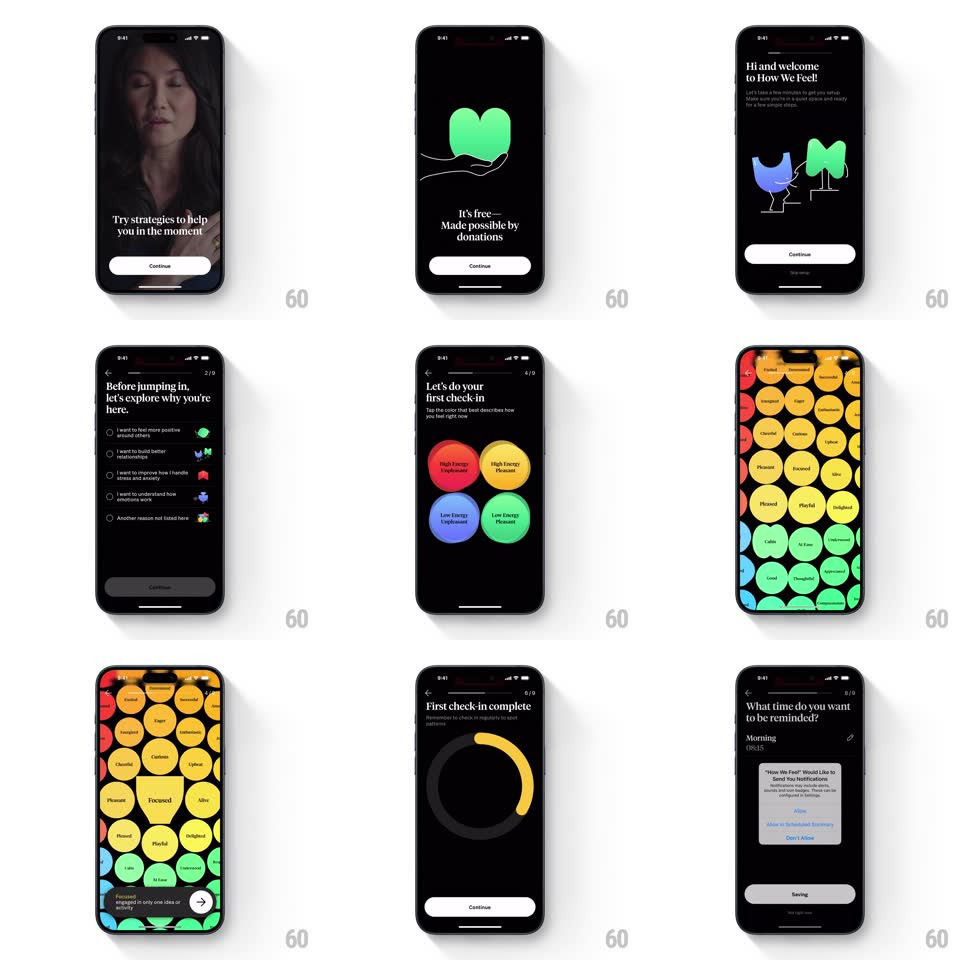

Media
Frame-by-frame

Rebuild this interaction 1:1: How We Feel's onboarding - a dark illustrative sequence of morphing blob characters and staggered text, ending in an elastic full-screen grid of colored emotion bubbles you can press.

Rebuild this interaction 1:1: How We Feel's onboarding - a dark illustrative sequence of morphing blob characters and staggered text, ending in an elastic full-screen grid of colored emotion bubbles you can press. ## Integration Integration: stack-agnostic spec - springs given as stiffness/damping, timed motions as duration + curve; map every value to your framework and animation library of choice. ## Scene Black-background onboarding: a title page with four blob characters (red, yellow, green, blue), a strategies video page, Terms & Privacy, a "why you're here" explainer, a feature list, then the emotion-grid pages - the screen fills edge to edge with circular emotion bubbles (red high-energy unpleasant family first, then yellow, green, blue quadrants), a "First check-in complete" progress ring, and a reminder time-picker. ## Motion spec Pattern: organic morphs + elastic bubble grid. - Page transitions morph rather than cut: blob characters from the title page drift and squash into the next page's illustration elements (600ms, springy paths), text crossfading separately (250ms). - Text reveals stagger line by line (translateY 10px + fade, 200ms, 90ms apart). - The emotion grid floods in: bubbles scale up from 0 with elastic overshoot (spring ~300/15, ~500ms settle) in a wave radiating from the screen's center (20ms per ring); each bubble carries its emotion label. - Bubbles are pressable jelly: touch-down squashes (scaleX 1.15, scaleY 0.85, 120ms), release bounces back with a wobble (spring ~240/12); neighboring bubbles get a small repel push (translate 4px away, spring back). - Selecting a bubble: it grows (scale 1 to 1.2) and deepens in saturation while others dim 20%; the grid scrolls between emotion families with a momentum pager. - Check-in complete: a yellow ring sweeps to full (stroke-dash, 800ms) with a soft haptic at close; the reminder page's time wheel snaps with detents. ## Calibration - Bubble colors map to the four emotion quadrants (red, yellow, green, blue) exactly - no off-palette bubbles. - The grid is dense: bubbles nearly touch, so the jelly presses read as a connected surface. ## Reduced motion Bubbles fade in; selection is a simple highlight. ## Don't miss - Everything sits on pure black - the bubble colors are the entire palette. - The blob characters are hand-drawn-feeling (asymmetric, soft); don't render them as perfect circles.